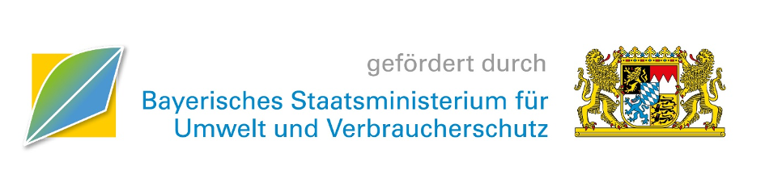

Mozartstr. 9
80336 München
Tel: (089) 55 27 94-0
Fax: (089) 55 27 94-451
E-Mail: info@vzbayern.de
eingetragen beim Amtsgericht München unter der Nummer VR 6188
vertreten durch den Vorstand Marion Zinkeler (inhaltlich verantwortlich).
USt-IdNr. DE 129520236
Die Verbraucherzentrale Bayern unterhält eine Vermögensschaden-Haftpflichtversicherung bei der
R+V Allgemeine Versicherung AG
Taunusstraße 1
65193 Wiesbaden
Der Versicherungsschutz bezieht sich auf Ansprüche, die vor deutschen Gerichten und vor Gerichten im EU-Ausland geltend gemacht werden.
Bei direkten oder indirekten Verweisen auf fremde Internetseiten ("Links"), die außerhalb unseres Verantwortungsbereiches liegen, würde eine Haftungsverpflichtung ausschließlich in dem Fall in Kraft treten, in dem wir von den Inhalten Kenntnis haben und es uns technisch möglich und zumutbar wäre, die Nutzung im Falle rechtswidriger Inhalte zu verhindern.
Wir erklären hiermit ausdrücklich, dass zum Zeitpunkt der Linksetzung keine illegalen Inhalte auf den zu verlinkenden Seiten erkennbar waren.
Auf die aktuelle und zukünftige Gestaltung, die Inhalte oder die Urheberschaft der gelinkten/verknüpften Seiten haben wir keinerlei Einfluss. Deshalb distanzieren wir uns hiermit ausdrücklich von allen Inhalten aller gelinkten/verknüpften Seiten, die nach der Linksetzung verändert wurden. Diese Feststellung gilt für alle innerhalb des eigenen Internetangebotes gesetzten Links und Verweise sowie für Fremdeinträge in von uns eingerichteten Gästebüchern, Diskussionsforen und Mailinglisten. Für illegale, fehlerhafte oder unvollständige Inhalte und insbesondere für Schäden, die aus der Nutzung oder Nichtnutzung solcherart dargebotener Informationen entstehen, haftet allein der Anbieter der Seite, auf welche verwiesen wurde, nicht derjenige, der über Links auf die jeweilige Veröffentlichung lediglich verweist.
Die Europäische Kommission stellt eine Plattform zur Online-Streitbeilegung (OS) bereit. Sie finden sie unter https://ec.europa.eu/consumers/odr/main/index.cfm?event=main.home.chooseLanguage.
Die Verbraucherzentrale Bayern ist bereit, zur Beilegung von Streitigkeiten aus Verträgen, die sie mit Verbraucherinnen und Verbrauchern abgeschlossen hat (z. B. anlässlich einer Rechtsberatung, Ratgeberlieferung) an einem Streitbeilegungsverfahren vor einer anerkannten Verbraucherschlichtungsstelle teilzunehmen.
Für die Leistungen der Verbraucherzentrale Bayern existiert noch keine branchenspezifische Schlichtungsstelle.
Zuständig ist daher die vom Bundesamt der Justiz anerkannte „Universalschlichtungsstelle des Bundes“ am Zentrum für Schlichtung e.V., Straßburger Str. 8, 77694 Kehl, https://www.verbraucher-schlichter.de/.
Technisch entwickelt wurde das Plugin von der ingenit GmbH & Co. KG (https://www.ingenit.com/).
Das Nervenschoner Plugin nutzt als technologische Basis das Projekt uBlock Origin (https://github.com/gorhill/uBlock). Der Quellcode des Nervenschoner Plugins ist OpenSource veröffentlicht unter der Lizenz GPL 3.0 (https://www.gnu.org/licenses/gpl-3.0.de.html).
Entwickelt wurde das Plugin in einer Kooperation von Verbraucherzentrale Bayern e.V. und ZD.B-Themenplattform Verbraucherbelange mit einer Förderung durch das StMUV.
